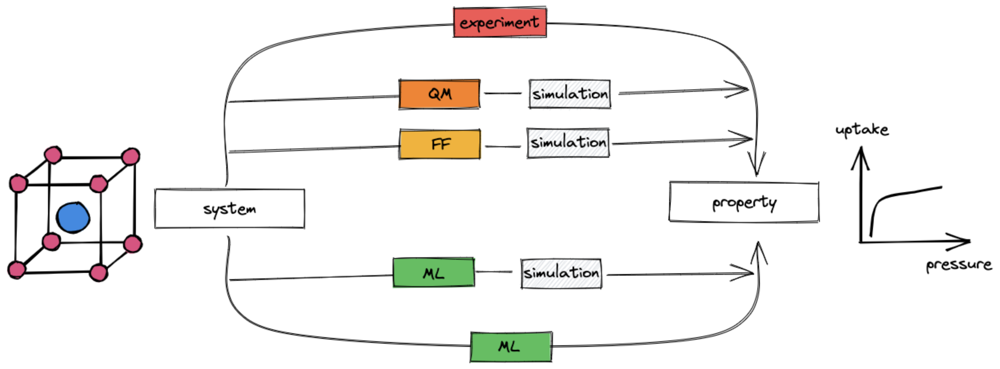
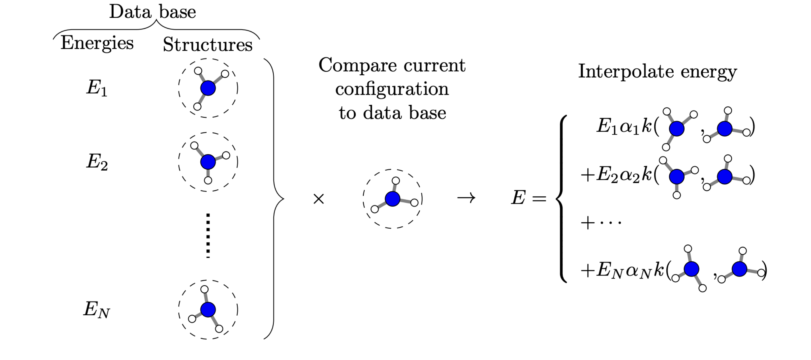

Workshop on ML for materials science
Motivation
To design new materials, we need to know their properties. There are two main routes to get the properties of a material:
- Perform an experiment to measure them
- Perform a simulation to “measure” them in silico
In many cases, performing an experiment is time-consuming and, hence, expensive. Also high-fidelity simulations can be very costly.
Therefore, there is a need for methods that can help us to predict the properties of materials with high fidelity and low cost. In this lecture, we will see that supervised machine learning (ML) is a powerful tool to achieve this goal.
Interestingly, this tool can be used in many different ways.
Where does ML fit in the design process?
Machine learning can be used in multiple ways to make high-fidelity predictions of materials less expensive.

Replace expensive evaluation of the potential energy surface \(U(\mathbf{X}, \{\mathbf{Z}\})\): Quantum chemistry as a field is concerned with the prediction of the potential energy surface \(U(\mathbf{X}, \{\mathbf{Z}\})\) of a system of atoms of types \(\mathbf{Z}\) at positions \(\mathbf{X}\). Quantum chemists have developed different approximations to this problem. However, since they are all kinds of functions that map positions of atoms (and atom types, and in some cases electron densities/coordinates) to energies, we can learn those functions with ML.
Note that once we have done that, we generally still need to perform simulations to extract the properties of interest (e.g. as ensemble averages).
There are many good review articles about this. For example, see this one by Unke et al. as well as the ones by Deringer et al. and Behler in the same issue of Chemical Reviews.
Directly predict the properties of interest
Note that in the context of using ML for molecular simulations, it can also be used to address sampling problems. We will not cover this in detail in this lecture. For a good introduction, see the seminal paper by Noe and a piece about it by Tuckerman.
Supervised ML workflow
Feeding structures into models
Incorporating symmetries/invariances/equivariances
Training a model
How to know if a model is good?
Linear regression
import jax.numpy as jnp
def linear_regression(x, w, b):
return jnp.dot(x, w) + bdef loss(w, b):
prediction = linear_regression(x, w, b)
return jnp.mean((prediction - y) ** 2)def init_params(num_feat):
return np.random.normal(size=(num_feat,)), 0.0loss_grad = jax.grad(loss, argnums=(0, 1))learning_rate = 1e-6
num_epochs = 1000Bias-variance trade-off
Hyperparameters
Kernel trick
